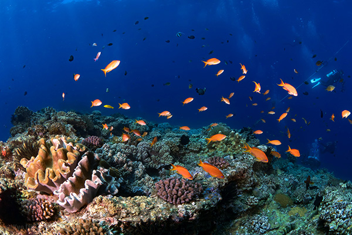

墾丁國家公園：海洋保育的模範之地
為了維護墾丁國家公園豐富的海洋生態資源，自2004年起，墾丁國家公園管理處積極與中華民國珊瑚礁學會及中華民國水中攝影協會等民間社團攜手合作。每年4月至5月間，珊瑚產卵期成為特別關注的時刻，管理處舉辦「珊瑚礁生態保育月」，透過與民間社團協作，致力於推動各項海洋生態保育的活動，以提高國人對於海洋保育的認識，同時達到自然生態保育的目的。
圖片來源：墾丁海洋生態繽紛永續旅遊守護環境
活動內容多元
「珊瑚礁生態保育月」的活動內容十分豐富，包括珊瑚產卵資訊發表、潛水淨海及淨灘活動、珊瑚礁生態環境保育資訊發表、海洋生態與保育巡查體驗，以及各類專題講座及座談等。這樣的多元化安排不僅讓參與者深入了解海洋生態保育的重要性，也提供了實際參與保育工作的機會，讓大眾更直接感受到保育工作的成果。
合作與成果
墾丁國家公園管理處與民間社團的緊密合作，使得這個活動逐漸成為引領全國海洋生態保育的典範。透過每年的活動，珊瑚礁生態保育週的知名度逐漸提高，成為引起國人關注的重要時刻。此外，墾丁國家公園管理處透過年度委託研究計畫及委託辦理計畫的成果展示，不僅提供了實際的保育成果，也向公眾展現其在保育領域的持續努力。
展望與未來
這項海洋生態保育的模範計畫不僅為墾丁國家公園注入了新的生機，也為全台海洋生態保育樹立了一個榜樣。展望未來，管理處將繼續深化與社會各界的合作，擴大保育範疇，並透過更多元的教育宣導，啟發更多人參與到海洋保育的行列中。這片美麗的海域，擁有著豐富的生態資源，期待著更多人的共同努力，讓墾丁國家公園成為海洋生態保育的典範之地。